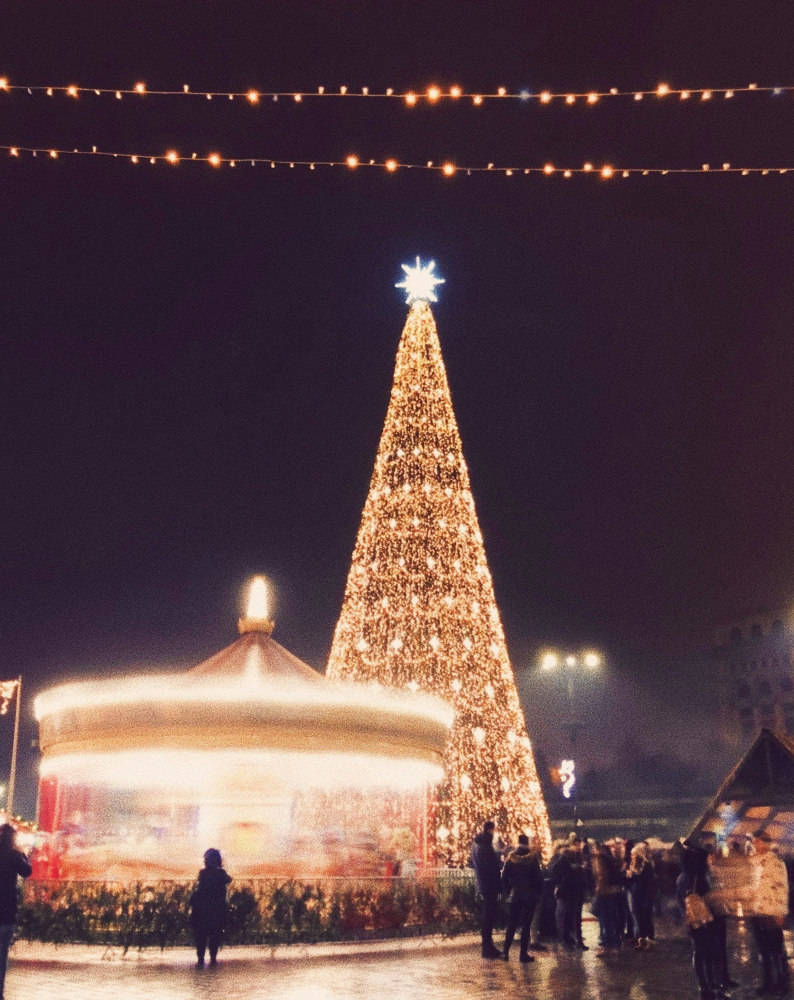

世界の名所についての概要
冬が訪れると、世界の名所は幻想的な輝きを放ちます。
ヨーロッパのクリスマスマーケット、北欧のオーロラ、
カナダの氷河、日本の白川郷、南極の壮大な風景…。
寒さが生み出す特別な景色を求めて、この冬、旅に出て みませんか？
scenery of the world
Iceland
アイスランド
太陽光のうち青色のみの氷を透過する光で作られる、 "スーパーブル"の世界が広がる「氷の洞窟」。
Finland
フィンランド
ノスタルジックな気分に浸れる「サンタクロース村」。
Germany
ドイツ
世界最大の、都市ごとの違いも楽しい「クリスマスマーケット」。
Taiwan
台湾
レトロで温かみのある、 冬の夜空をあたたかく灯す「ランタンフェスティバル」。
Sweden
スウェーデン
３６０度視界が開けた雪山で、神秘的な光が空を覆う「オーロラ」。
England
イギリス
ワクワクとしたクリスマスムードと、 その煌めきに大人も童心にかえる「ウィンターワンダーランド」。
photo gallery


